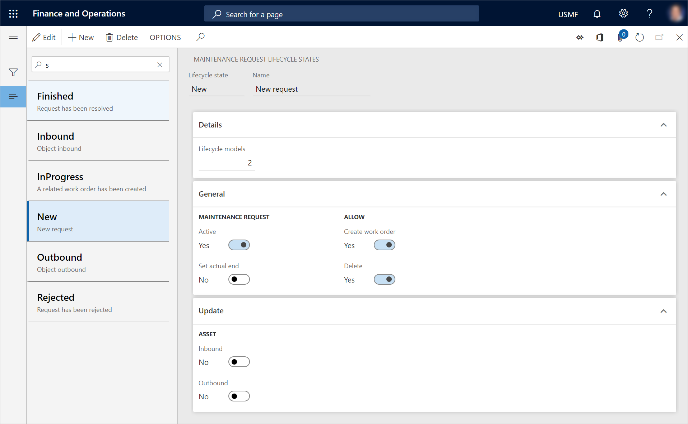
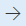
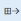
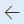
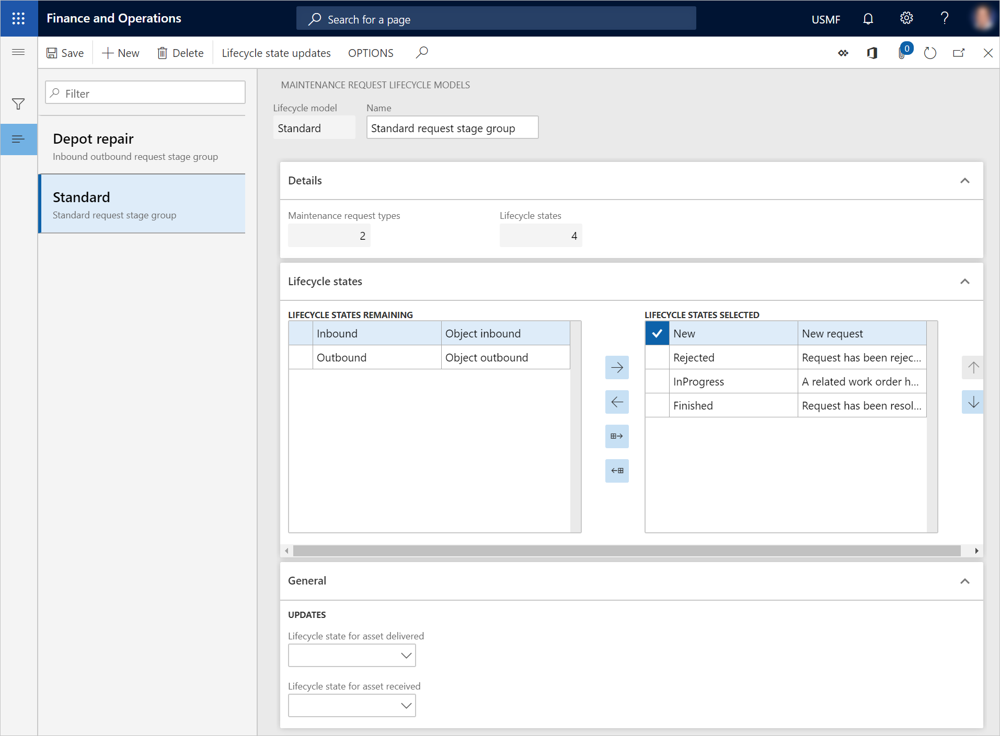

Wartungsanfrage-Lebenszyklusstatus
Important
Dynamics 365 for Finance and Operations hat sich zu speziell entwickelten Anwendungen entwickelt, mit denen Sie bestimmte Geschäftsfunktionen verwalten können. Weitere Informationen zu diesen Änderungen finden Sie im Dynamics 365-Lizenzierungshandbuch.
Wartungsanfrage-Lebenszyklusstatus definieren die Phasen, die eine Anfrage durchlaufen kann. Hierzu gehören Erstellt, Aktiv und Beendet. Wenn eine Wartungsanfrage in einen Arbeitsauftrag konvertiert wird, sollte der Wartungsanfrage-Lebenszyklusstatus in Beendet oder Geschlossen aktualisiert werden, um anzugeben, dass die Wartungsanfrage nicht mehr aktiv ist. Auf der Listenseite Alle Wartungsanfragen sehen Sie alle Wartungsanfragen unabhängig von ihrem Lebenszyklusstatus.
Wartungsanfrage-Lebenszyklusstatus einrichten
Wählen Sie Anlagenverwaltung > Einstellungen > Wartungsanfragen > Lebenszyklusstatus aus.
Wählen Sie Neu aus, um einen Wartungsanfrage-Lebenszyklusstatus zu erstellen.
Geben Sie im Feld Lebenszyklusstatus eine Kennung für den Lebenszyklusstatus ein.
Geben Sie im Feld Name einen Namen ein.
Auf dem Inforegister Details wird im Feld Lebenszyklusmodelle die Anzahl von Wartungsanfrage-Lebenszyklusmodellen angezeigt, die diesen Lebenszyklusstatus verwenden.
Legen Sie auf dem Inforegister Allgemein die Option Aktiv auf Ja fest, wenn eine Wartungsanfrage aktiv sein soll, während sie diesen Lebenszyklusstatus hat.
Legen Sie die Option Tatsächliches Ende festlegen auf Ja fest, wenn automatisch ein tatsächliches Enddatum und eine Uhrzeit für eine Wartungsanfrage eingegeben werden sollen, die diesen Lebenszyklusstatus hat.
Legen Sie die Option Arbeitsauftrag erstellen auf Ja fest, wenn ein Arbeitsauftrag aus einer Wartungsanfrage erstellt werden kann, die diesen Lebenszyklusstatus hat.
Legen Sie die Option Löschen auf Ja fest, wenn eine Wartungsanfrage gelöscht werden kann, während sie diesen Lebenszyklusstatus hat.
Im Inforegister Aktualisieren sind die Optionen Eingehend und Ausgehend im Bereich Anlage relevant, wenn Sie die Depotreparatur verwenden. Legen Sie die entsprechende Option auf Ja fest, wenn der Lebenszyklusstatus von Anlagen, die in einer Wartungsanfrage ausgewählt sind, automatisch zu Eingehend oder Ausgehend aktualisiert werden soll, wenn der Lebenszyklusstatus der Wartungsanfrage auf Eingehend oder Ausgehend festgelegt ist.
Die folgende Abbildung zeigt ein Beispiel der Seite Wartungsanfrage-Lebenszyklusstatus.

Note
Wartungsanfrage-Lebenszyklusstatus, -Lebenszyklusstatusgruppen und -typen stehen mit Arbeitsauftrag-Lebenszyklusstatus, -Lebenszyklusstatusgruppen und -typen in Zusammenhang und werden genauso wie diese verwendet.
Wartungsanfrage-Lebenszyklusmodelle einrichten
Nachdem Sie die Lebenszyklusstatus erstellt haben, die für die Wartungsanfragen erforderlich sind, können diese in Lebenszyklusstatusgruppen oder Lebenszyklusmodelle aufgeteilt werden. Wartungsanfrage-Lebenszyklusmodelle werden verwendet, um den Fluss zu erstellen, der für verschiedene Arten von Wartungsanfragen verwendet werden kann. Es sollte mindestens ein Wartungsanfrage-Lebenszyklusmodell erstellt werden.
Wählen Sie Anlagenverwaltung > Einstellungen > Wartungsanfragen > Lebenszyklusmodelle aus.
Wählen Sie Neu aus, um ein Wartungsanfrage-Lebenszyklusmodell zu erstellen.
Geben Sie im Feld Lebenszyklusmodell eine Kennung für das Lebenszyklusmodell ein.
Geben Sie im Feld Name einen Namen ein.
Auf dem Inforegister Details wird im Feld Lebenszyklusstatus die Anzahl von Lebenszyklusstatus angezeigt, die in diesem Lebenszyklusmodel ausgewählt sind. Im Feld Wartungsanfragentypen wird die Anzahl der Wartungsanfragentypen angezeigt, die dieses Lebenszyklusmodell verwenden.
Wählen Sie auf dem Inforegister Lebenszyklusstatus die Lebenszyklusstatus aus, die in das Lebenszyklusmodell einbezogen werden sollen:
- Um einen Lebenszyklusstatus in das Lebenszyklusmodell einzuschließen, wählen Sie ihn im Bereich Verbleibende Lebenszyklusstatus aus, und klicken Sie dann auf die Schaltfläche mit dem Pfeil nach rechts , um ihn in den Bereich Ausgewählte Lebenszyklusstatus zu verschieben.
- Um alle verfügbaren Lebenszyklusstatus in das Lebenszyklusmodell einzuschließen, wählen Sie die Schaltfläche Alle verfügbaren Status auswählen  aus. Alle Lebenszyklusstatus werden in den Bereich Ausgewählte Lebenszyklusstatus verschoben.
- Um einen Lebenszyklusstatus aus dem Lebenszyklusmodell zu entfernen, wählen Sie ihn im Bereich Ausgewählte Lebenszyklusstatus aus, und klicken Sie dann auf die Schaltfläche mit dem Pfeil nach links , um ihn in den Bereich Verbleibende Lebenszyklusstatus zu verschieben.
Auf dem Inforegister Allgemein sind die Felder im Abschnitt Aktualisierungen relevant, wenn Sie die Depotreparatur verwenden.
- Wählen Sie im Feld Lebenszyklusstatus bei Anlagenzugang den Anlagenlebenszyklusstatus aus, auf den Anlagen, die in einer Wartungsanfrage ausgewählt werden, automatisch aktualisiert werden sollen, wenn sie zur Depotreparatur eingehen.
- Wählen Sie im Feld Lebenszyklusstatus bei Anlagenauslieferung den Lebenszyklusstatus aus, auf den Anlagen, die in einer Wartungsanfrage ausgewählt werden, automatisch aktualisiert werden sollen, wenn sie nach der Reparatur zurückgegeben werden.
Die folgende Abbildung zeigt ein Beispiel der Seite Wartungsanfrage-Lebenszyklusmodelle.
